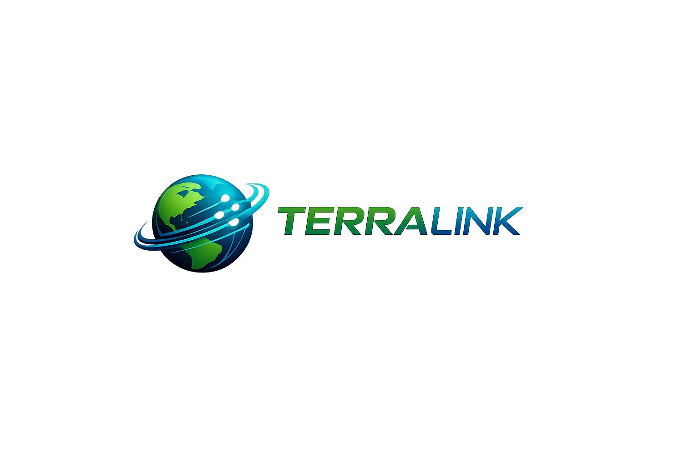

TerraLink menghadirkan koneksi internet stabil, cepat, dan tanpa batas untuk rumah dan bisnis Anda.
Koneksi Fiber Optic 100% stabil tanpa gangguan cuaca.
Proteksi jaringan modern dengan sistem monitoring 24/7.
Jaringan terus berkembang menjangkau lebih banyak area.
Tim profesional siap membantu kapan saja Anda butuhkan.
Pelanggan Aktif
Network Uptime (%)
Support (Jam)
Ya, TerraLink menggunakan 100% jaringan Fiber Optic untuk memastikan koneksi stabil, cepat, dan minim gangguan.
Semua paket TerraLink bersifat Unlimited tanpa FUP sehingga Anda dapat menikmati internet tanpa batas kuota.
Proses instalasi biasanya memakan waktu 1–3 hari kerja setelah area Anda terkonfirmasi tercover jaringan.
Ya, tim support TerraLink tersedia 24/7 untuk membantu kendala teknis maupun informasi layanan.
Anda dapat menggunakan fitur Coverage Check pada halaman utama atau menghubungi tim kami untuk pengecekan langsung.
Biaya instalasi tergantung pada promo yang sedang berjalan. Silakan cek bagian paket atau hubungi sales kami.
Tergantung paket yang dipilih. Paket 30 Mbps cocok untuk 2–3 perangkat, sedangkan paket lebih tinggi mendukung lebih banyak perangkat.
Kami menyediakan berbagai metode pembayaran seperti transfer bank, virtual account, dan e-wallet.
Ya, TerraLink menyediakan paket khusus bisnis dengan SLA dan prioritas bandwidth lebih tinggi.
Silakan restart perangkat ONT/router terlebih dahulu. Jika masih bermasalah, hubungi tim support kami untuk pengecekan lebih lanjut.